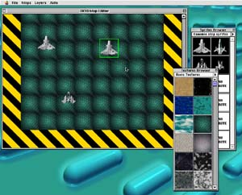

OXYD Project était un projet de jeu de type shoot-them-up à scrolling vertical en 32000 couleurs et plein écran.
Ce projet est désormais abandonné.

La plupart du code source (moteur 2D, moteur sprites...) est disponible gratuitement sur le site PowerToolBox:
PowerToolBox
Si vous souhaitez obtenir le code source d'autres éléments du jeu (éditeur de niveaux, éditeur de fichiers...), contactez-moi.